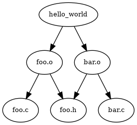

CMSC216 Project 4: Make me a Bake
- Due: 11:59pm Wed 24-Apr-2024
- Approximately 3.0-4.0% of total grade
- Submit to Gradescope (Now Available)
- Projects are individual work: no collaboration with other students is allowed. Seek help from course staff if you get stuck for too long.
CODE/TEST DISTRIBUTION: p4-code.zip
VIDEO OVERVIEW: https://youtu.be/a6eUq7uulD0
CHANGELOG:
- Mon Apr 22 06:35:44 PM EDT 2024
An Optional MAKEUP CREDIT problem (Problem 5) has been added to the project specification. The problem centers around detecting cycles in the graph of target/dependencies. Test cases are available and can be downloaded from the current code pack OR by updating the project files via:
curl https://www.cs.umd.edu/~profk/216/p4-update.sh | /bin/bash
NOTE: some students reported that the update script did not work for them. The current update script should be functional for all now. If you have problems updating, follow up on the Piazza post announcing this update.
- Fri Apr 19 01:40:29 PM EDT 2024
A video overview for P4 has been posted here: https://youtu.be/a6eUq7uulD0.
The Gradescope submission link for P4 is now live.
- Fri Apr 19 11:33:18 AM EDT 2024
Several posts including @683 identified that the current tests corrected spelling typo
rule_capacityrather thanrule_capcaity. This stems from the provided functionbake_show_bake()inbake_util.c. You may either fix the typo manually or re-run the project update script to correct the typo:curl https://www.cs.umd.edu/~profk/216/p4-update.sh | /bin/bash
- Thu Apr 18 05:38:50 PM EDT 2024
The second phase is complete with descriptions added and test cases for Problems 3 & 4 now in the codepack. For those who whish to update an existing project, run the following command in a Unix terminal:
curl https://www.cs.umd.edu/~profk/216/p4-update.sh | /bin/bash
This will create backup copies of existing test files then download the up to date files.
Several bugs in the Problem 1&2 tests are fixed in this release such as inconsistent I/O flags and errant single quotes that appear on Linux systems but not on Grace. There likely remain further bugs but these will be dealt with in time.
- Thu Apr 18 01:30:34 PM EDT 2024
- A section
has been added to clarify some aspects of
bake_add_empty_rule()such as encouraging the use of therealloc()andmemset()functions to quickly implement some required behavior. - Tue Apr 16 11:43:24 AM EDT 2024
Post @627 expressed some confusion and the potential that the
bake_create_from_file()function had errors. This is confusion centers around the the responsibilities of thebake_add_empty_rule()function. This function MUST initialize the data ofrule_tto0 / NULLbefore returning a pointer to it. If it does not, test failures will result.To clarify and hint at an easy way to accomplish this initialization, the documentation for the
bake_add_empty_rule()has been expanded to the following:rule_t *bake_add_empty_rule(bake_t *bake); // PROBLEM 1: Modifies `bake` to add a new, empty rule to it and // returns a pointer to that rule. If bake->rules[] is full // (rule_capacity and rule_count are equal) doubles the size of // rules[] via realloc() in order create room at its end for the new // empty rule. Returns a pointer to the new empty rule. // // CLARIFICATION: This function intitalizes all the date in the // returned rule to NULL or 0 including the nested arrays. HINT: // make use of the memset() to quickly initialize the entire rule_t // struct to 0's. This is possible due to the nested arrays being // within the rule_t rather than pointers to other blocks of memory // which means a single memset() call will suffice. // // CAUTION: Calling this function MAY invalidate any pointers to // existing rules as the array that houses the rules may move. // This sequence is dangerous: // rule_t *rule = bake_target_rule(bake, "sometarget"); // rule_t *empty = bake_add_empty_rule(bake); // rule may now point to de-allocated memory
Table of Contents
1 Overview
Build systems pervade software development. They automate repetitive tasks and raise the quality of software by making it easier to create and test software efficiently. Make and its Makefiles is a venerable example of a build system that has stood the test of time. While it has some quirks, it is well worth knowing how to use Makefiles as well as know some details of the internal implementation of such systems.
This project will build a simplified version of Make called Bake which uses Bakefiles that have a simplified syntax compared to Makefiles but implement the core principles of a build system. These principles include the following which are all related to systems programming:
- Creating child processes to execute external commands
- Examining files on the file system to determine attributes such as presence / absence and modification time
- Recursively traversing a data structure representing dependencies and executing commands to update targets or detecting that no such updates are needed.
Special Note on Staged Release
This project will be released in 2 phases.
- The Initial release includes overall information with details and test cases for Problems 1&2
- About 5 days after the initial release, details and test cases for Problems 3&4 will be released.
- A few days after that, several MAKEUP credit problems will become available.
The project is of medium size so you are encouraged to begin working on problems as they become available.
2 Download Code and Setup
Download the code pack linked at the top of the page. Unzip this which will create a project folder. Create new files in this folder. Ultimately you will re-zip this folder to submit it.
| File | State | Notes |
|---|---|---|
bake.h |
Provided | Header file for shellac |
bake_util.c |
Provided | Utility functions provided |
bake_funcs.c |
CREATE | Functions that operate data in the Bake system |
bake_main.c |
CREATE | main() function for the Bake |
| Build/Testing Files | ||
Makefile |
Provided | Build file to compile all programs |
testy |
Testing | Test running script |
test_bake12.c |
Testing | Unit tests for Problems 1 & 2 |
test_prob1.org |
Testing | Tests for Problem 1 |
test_prob2.org |
Testing | Tests for Problem 2 |
test_bake34.c |
Testing | Unit tests for Problems 3 & 4 Not yet Released |
test_prob3.org |
Testing | Tests for Problem 3 Not yet Released |
test_prob4.org |
Testing | Tests for Problem 4 Not yet Released |
test-data/ |
Testing | Subdirectory with files / programs used during testing |
3 Overview of Bake
3.1 Bakefiles
Bake/Bakefiles share many similiarities with Make/Makefiles. Readers are assumed to have some familiarity with Makefiles. If not, consult previous course materials the introduce them and/or review external manuals and documentation that describe the essence of Makefiles.
Below is a sample Bakefile provided in the data/Bakefile3
1: # SampleBakefile: a sample Bakefile. Run this with 2: # >> bake -f SampleBakefile 3: 4: # lead target is 'demo' which will be used if 5: # no target is specified on the command line. 6: # Some of the commands have @ as their prefix which 7: # silences the command. 8: demo : hello bye 9: @ echo Running programs 10: ./hello 11: ./bye 12: @ echo Done running programs 13: 14: all : hello bye 15: 16: # this is program 1 / 2 17: hello : hello.o 18: gcc -o hello hello.o 19: 20: hello.o : hello.c 21: gcc -c hello.c 22: 23: # this is program 2 / 2 24: bye : bye.o 25: gcc -o bye bye.o 26: 27: bye.o : bye.c 28: gcc -c bye.c 29: 30: # this target removes built files 31: clean : 32: rm -f hello.o bye.o hello bye 33: 34: # END of SampleBakefile
A few notes on the features / non-features of Bakefiles.
- Comments always start a line with
#; comments are not allowed elsewhere (such as after other parts) - Blank lines are allowed and have no effect on builds
- Any other line is presumed to start a Rules of the same type
Makefiles use
target : dependenciesand the a list of space-indented commands - It is required that
targetanddependencyare space separated by the colon.target : dep1 dep2is fine,target: dep1 dep2is not supported. - Commands that start with
@ cmdwill cause the command to be Silenced during builds. The Space after@is required. - No variable substitution presently supported and no automatic
variables such as
$@are supported
Generally Bakefiles are a subset of Makefiles so make should work
for Bakefiles (e.g. make -f Bakefile should build) The output of
bake will be a little different than make but accomplish the same
task.
3.2 Data Structures
There are 3 central data structures used in Bake which are found in
the header bake.h.
cmd_t- Encodes information about a single command like
gcc -o myprog x.o y.ofrom a Bakefile. rule_t- Encodes an entire rule from a Bakefile including its
target, dependencies, and an array of
cmd_tstructs for each of the commands to run. bake_t- Encodes the entire contents of a Bakefile. It's main
feature is an array of
rule_tstructs and a String Table: a single large string with other parts of the data structure pointing into it for their own strings.
It is worthwhile spend some time acquainting yourself with some of the
documentation on these structs provided in bake.h. Refer back to the
header often as you need to recall parts of the data.
DESIGN NOTE: The data structures are designed as a compromise
between minimizing the need to malloc() memory while still providing
reasonable flexibility to handle Bakefiles. One notable tradeoff that
will affect your code
- The
rules[]array inbake_tismalloc()'dso can grow via re-allocation. It therefore tracks bothrule_capcity(size of the array) andrule_count, the number of elements in the array. - Other arrays are fixed length:
deps[]andcmds[]inrule_tandtokens[]incmd_thave a fixed size. In a production setting, one might reconsider this but using fixed sizes here simplifies much of the parsing difficulty by pre-allocating space for these arrays.
3.3 Outline of bake_funcs.c
The primary implementation files required are bake_funcs.c and
bake_main.c. As the name suggests, bake_main.c will contain the
main() function and is part of the final problem.
bake_funcs.c has a number of "service" functions which manipulate
Bake data. Each of these is required and will be tested. The outline
and some brief documentation for them is below.
// bake_funcs.c: required service functions for handling of Bakefiles
////////////////////////////////////////////////////////////////////////////////
// PROBLEM 1
////////////////////////////////////////////////////////////////////////////////
char *slurp_file_efficient(char *fname);
// PROBLEM 1: Uses combination of stat() and read() to efficiently
// read in the entire contents of a file into a malloc()'d block of
// memory, null terminates it (\0). Returns a pointer to the file data
// or NULL if the file could not be opened. If the file can't be
// opened, use perror() to print "Couldn't open file" and why.
rule_t *bake_target_rule(bake_t *bake, char *targname);
// PROBLEM 1: Searches bake for a rule with a target that equals
// `targname`. If found, returns a pointer to that rule. Otherwise
// returns NULL if no rule with target `targname` exists.
//
// DESIGN NOTE: The curent design makes use of linear search for
// target location, O(rule_count) for each lookup. Maintainting a hash
// table of target->rule key/vals would allow O(1) lookup for rules
// with given target names.
rule_t *bake_add_empty_rule(bake_t *bake);
// PROBLEM 1: Modifies `bake` to add a new, empty rule to it and
// returns a pointer to that rule. If bake->rules[] is full
// (rule_capacity and rule_count are equal) doubles the size of
// rules[] via realloc() in order create room at its end for the new
// empty rule. Returns a pointer to the new empty rule.
//
// CLARIFICATION: This function intitalizes all the date in the
// returned rule to NULL or 0 including the nested arrays. HINT: make
// use of the memset() to quickly initialize the entire rule_t struct
// to 0's. This is possible due to the nested arrays being within the
// rule_t rather than pointers to other blocks of memory which means a
// single memset() call will suffice.
//
// CAUTION: Calling this function MAY invalidate any pointers to
// existing rules as the array that houses the rules may move.
// This sequence is dangerous:
// rule_t *rule = bake_target_rule(bake, "sometarget");
// rule_t *empty = bake_add_empty_rule(bake);
// rule may now point to de-allocated memory
int bake_add_implicit_rules(bake_t *bake);
// PROBLEM 1: Iterate over all rules appending implicit rules for any
// dependency that is not an explicit target. New rules added in this
// way are marked with the RULE_IMPLICIT_BIT.
//
// CAUTION: Since bake->rules[] may expand, care must be taken when
// referencing rules in this function to avoid inadvertently derefing
// a pointer to free()'d memory.
void bake_print_cmd(cmd_t *cmd);
// PROBLEM 1: If the SILENCE_BIT is set, does nothing and immediately
// returns. Otherwise, prints the given command token by token. If I/O
// redirects are indicated by the fields of the command, prints the
// after all tokens with "< infile" for input followed by "> outfile"
// if present. This function is used to print out commands in
// bake_execute_cmd().
////////////////////////////////////////////////////////////////////////////////
// PROBLEM 2
////////////////////////////////////////////////////////////////////////////////
int bake_execute_cmd(cmd_t *cmd);
// PROBLEM 2: Called during bake_do_update(). Prints the command using
// bake_print_cmd() unless its SILENCE bit is set. fork()'s a child
// process which exec's the command specified in cmd->tokens. Sets up
// I/O redirection in child process if indicated by cmd flags and
// fields. Uses a wait() call to wait until the child process is
// done. If the child completes normally, its exit code is passed up,
// 0 or non-zero. If the child process fails to complete normally or
// prints an error message with line number of command
// CMD_NONSTAND_EXIT. Non-zero returns from this function will usually
// be handled in a build by cancelling the build whil 0 return will
// cause the build to prceed and execute subsequent commands.
//
// During Input and Output redirection, if the requrested files cannot
// be opened, the child process exits with code CMD_FAIL_INPREDI or
// CMD_FAIL_OUTREDI. Additionally, if the child fails to exec() a
// command, CMD_FAIL_EXEC is used as its return code. All of these are
// non-zero and trigger builds to fail. In the above failure cases,
// prints one of the below error messages appropriate to the error.
//
// perror("ERROR: can't open file for output")
// perror("ERROR: can't open file for output")
// perror("ERROR: job failed to exec");
//
// CLARIFICATION: When open()'ing files for output redirection,
// certain options should be passed to ensure that the created file
// adheres to conventions
// - For the second argument to open(), pass options
// O_WRONLY|O_CREAT|O_TRUNC
// which will open the file for writing, create it if not present,
// and truncate the file if it already exists
// - For the third argument to open(), pass the arguments
// S_IRUSR|S_IWUSR
// which will set the "rw" permissions on the created file for the
// owner (user) of the file
////////////////////////////////////////////////////////////////////////////////
// PROBLEM 3
////////////////////////////////////////////////////////////////////////////////
int bake_set_updates(bake_t *bake, char *targname);
// PROBLEM 3: Starting at `targname`, recurses down the
// target/dependency DAG setting the UPDATE bit in rule_flags to
// indicate whether a target requires updates. Makes use of the
// CLEAR_BIT(), CHECK_BIT(), and SET_BIT() macros when dealing with
// bit-manipulations. For a given rule, first visits all its
// dependencies to check if they require updates via recursion. Then
// determines if `targname` requires an update. The conditions that
// require an update are described in detail in the program
// specification and shoudl be consulted while implementing this
// function. Returns 1 if target needs to be updated so associated
// rule commands should be run later. Returns 0 if the named target
// does not need to be updated. Prints an error if targname is not
// found and returns -1. If any dependency returns -1, an error
// ocurred lower down the DAG. In case, nothing is printed nothing and
// -1 is returned up the nested recursion.
int bake_do_updates(bake_t *bake, char *targname);
// PROBLEM 3: Starting at `targname`, run commands if the UPDATE bit
// is set. Before running commands associated with `targname`,
// recursively visit dependencies and if their UPDATE bit is set, run
// their commands first. Returns number of rules that were updated or
// -1 to indicate an error ocurred while running commands.
////////////////////////////////////////////////////////////////////////////////
// PROBLEM 4
////////////////////////////////////////////////////////////////////////////////
int bake_cmd_postprocess(bake_t *bake, cmd_t *cmd);
// PROBLEM 4: Examines cmd->tokens to set cmd->flags and a few other
// fields. Used to post-process the raw tokens of a command. Likely
// uses the utility function array_shift() to ease the re-arrangment
// of arrays.
//
// 1. If tokens[0] = "@", eliminates this token by shifting all tokens
// over and sets the SILENCED bit
//
// 2. If tokens[i] = "<", input redirection is desired; if tokens[i+1]
// is not NULL, returns -1. Otherwise sets the INPREDI bit and
// input_redirect field to tokens[i+1]. Then shifts all tokens over to
// eliminate tokens[i] and tokens[i+1].
//
// 3. If tokens[i] = ">", output redirection is desired and performs
// similar operations to #2 with the OUTREDI flag and output_redirect
// fields.
//
// Correctly handles any order of "< input" / "> output" and other
// tokens (ex: output redirection may appear first followed by normal
// tokens followed by input redirection)
//
// If multiple "<" or ">" tokens appear, the behavior of this function
// is unspecified: it may return an error, segfault, or behave randomly.
//
// Returns 0 on succesful completion.
//
// DESIGN NOTE: This function must be called prior to any commands
// being run. The ideal location is during parsing to modify commands
// as a bake_t structure is built. However, this functionality is
// separated out to enable future functionality such as variable
// substitution to be added to commands and tested separately from
// parsing. Any additional context needed for such things will be part
// of the 'bake' parameter (e.g. may contain a map of variable
// names/values for substitutions).
void bake_post_process(bake_t *bake);
// PROBLEM 4: Applies postprocessing operations to the bake after
// loading it from a file. Currently only iterates over all rules and
// applies bake_cmd_postprocess() to each of their commands.
//
// DESIGN NOTE: This function is where additional operations could be
// used to further modify the bakefile such as performing variable
// substitutions on rules / targets, including other bakefiles. etc.
////////////////////////////////////////////////////////////////////////////////
// PROBLEM 5 MAKEUP CREDIT (OPTIONAL)
////////////////////////////////////////////////////////////////////////////////
int bake_check_cycles(bake_t *bake, char *targname, int do_print);
// PROBLEM 5 MAKEUP: Analyzes `bake` starting at targname to
// deteremine if any cycles are present which would create problems
// completing a build: if targA depends on targB depends an targA, a
// cyclcil dependency exists and could not be fulfilled. Returns 1 if
// a cycle is present, 0 if no cycle is present, and -1 if an error
// occurs such as not finding a needed target.
//
// If do_print is non-zero, prints out a message like:
//
// ERROR Cyclic Dependency detected:
// fileA.txt -> fileB.txt -> fileC.txt -> fileA.txt
//
// where the first line is always identical and the second line shows
// the path from the initial target through a cycle. Implementations
// assume that these messages will fit in a 2048-byte array and have
// undefined behavior if the message is larger.
//
// NOTES: This function needs to initiate a recursive descent into
// `bake` via a helper function which does the brunt of the work.
// This helper function may be defined in whatever way with whatever
// prototype is convenient. Global variables may be used to help
// generate cycle message BUT implementations with pride will find
// ways to avoid the use of global variables.
3.4 Provided Utility Functions
The emphasis of the project is on utilizing some system calls to
achieve an interesting effect. To that end, some code is provided to
focus attention on these aspects of the project. Most of these
functions will be used by code in bake_funcs.c or the main()
function so consult these enough to know how to use them.
Notable functions are:
Dprintf()- Print a debugging message which is only shown if an environment variable is set. Extremely useful during debugging and alleviates the need to remove debugging messages after the fact.
array_shift()- moves around elements in an array to "delete"
one. Useful when post-processing the tokens in a
cmd_t. bake_create_from_file()- reads the contents of a file and create
a
bake_tfrom it. This is tricky code worth studying but students are not required to modify it in any way, just use it inmain()to load a specified file then post-process the data structure before operating on it. The function makes useslurp_file_efficient()which students will need to write.
Below is an outline of the provided function. The full source can be viewed in the indicated source file.
// bake_util.c: provided functions for the bake program
////////////////////////////////////////////////////////////////////////////////
// string processing
////////////////////////////////////////////////////////////////////////////////
void split_into_lines(char *text, char ***lines, int *nlines);
// Modifies `text` so that each line ends with a \0 (rather than
// \n). Sets lines to point to a malloc()'d array of the start of each
// line. Sets nlines to be the number of lines.
//
// EXAMPLE:
// char text[32] = "every good\nboy does fine\nFACEG\n\0";
// char **lines; int nlines;
// split_into_lines(text, &lines, &nlines);
// - text[] is now "every good\0boy does fine\0FACEG\0\0"
// - nlines is now 4
// - lines is now {"every good","boy does fine","FACEG",""}
// - lines[i] points into text[]
void split_into_tokens(char *line, char ***tokens, int *ntokens);
// Modifies line so that whitespace-separate characters are replaced
// with \0's to denote 'tokens'. Sets parameter `tokens` to be a
// malloc()'d array with pointers to each of the tokens. Sets ntokens
// to be the nubmer of tokens in the line.
//
// EXAMPLE:
// char line[32] = "hello : friendly world\0";
// char **tokens; int notkens;
// split_into_tokens(line, &tokens, &ntokens);
// - line[] is now "hello\0\0:\0\0friendly\0world\0"
// - ntokens is now 4
// - tokens is now {"hello",":","friendly","world"}
// - tokens[i] points into line[]
////////////////////////////////////////////////////////////////////////////////
// general utilities
////////////////////////////////////////////////////////////////////////////////
void array_shift(char *strs[], int delpos, int maxlen);
// shift the array of strings left by 1 starting at delpos; eliminates
// delpos from the array.
long diff_timespec(struct timespec a, struct timespec b);
// returns difference in times between a-b; positive return means a is
// newer than b; negative indicates b is newer than a
void Dprintf(const char* format, ...);
// Prints out a message if the environment variable DEBUG is set;
// Try running as `DEBUG=1 ./some_program`
void ind_printf(int ind, const char* format, ...);
// Like printf but indents 'ind' spaces; used for printing recursive
// data structures
////////////////////////////////////////////////////////////////////////////////
// bake-specific provided functions
////////////////////////////////////////////////////////////////////////////////
bake_t *bake_create_from_file(char *fname);
// parse file and create a bakefile from it
void bake_free(bake_t *bake);
// De-allocates memory associated with a bake_t
void bake_show_cmd(cmd_t *cmd, int ind);
// print a formatted version of cmd_t for testing / debugging
void bake_show_rule(rule_t *rule, int ind);
// print a formatted version of a rule_t for testing / debugging
void bake_show_bake(bake_t *bake, int ind);
// print a formatted version of a bake_t for testing / debugging
3.5 Sample Usage
Below is an example use of the complete bake program to perform
make-like activities in the provided data/ directory.
1: # Demonstration of bake 2: >> cd p4-code 3: 4: >> make bake 5: gcc -Wall -Wno-comment -Werror -g -Wno-format-security -c bake_funcs.c 6: gcc -Wall -Wno-comment -Werror -g -Wno-format-security -c bake_main.c 7: gcc -Wall -Wno-comment -Werror -g -Wno-format-security -c bake_util.c 8: gcc -Wall -Wno-comment -Werror -g -Wno-format-security -o bake bake_funcs.o bake_main.o bake_util.o 9: 10: >> cd data 11: 12: >> cat Bakefile1 # show a sample Bakefile 13: # this is a comment 14: 15: hello : hello.c 16: gcc -o hello hello.c 17: 18: # this is the end of the Bakefile 19: 20: >> ../bake -f Bakefile1 # use bake to build the targets 21: bake: updating 'hello' via 1 command(s) 22: gcc -o hello hello.c 23: bake complete, 1 update(s) performed 24: 25: >> ./hello # run the built program 26: Hello world! 27: 28: >> ../bake -f Bakefile1 # build again but there's no action needed 29: bake: file 'hello' is up to date 30: 31: >> rm hello # delete hello program 32: 33: >> cp Bakefile1 Bakefile # copy to the default name 'Bakefile' 34: 35: >> ../bake # build using default 'Bakefile' 36: bake: updating 'hello' via 1 command(s) 37: gcc -o hello hello.c 38: bake complete, 1 update(s) performed 39: 40: >> ../bake # again, rebuilding need take no action 41: bake: file 'hello' is up to date 42: 43: >> cat Bakefile3 # show a more complex Bakefile 44: # this is a leading comment 45: 46: # this target uses the program that is built 47: # and runs it printing messages around it 48: demo : hello bye 49: @ echo Running programs 50: ./hello 51: ./bye 52: @ echo Done running programs 53: 54: all : hello bye 55: 56: # this is program 1 / 2 57: hello : hello.o 58: gcc -o hello hello.o 59: 60: hello.o : hello.c 61: gcc -c hello.c 62: 63: # this is program 2 / 2 64: bye : bye.o 65: gcc -o bye bye.o 66: 67: bye.o : bye.c 68: gcc -c bye.c 69: 70: # this target removes built files 71: clean : 72: rm -f hello.o bye.o hello bye 73: 74: # END OF THE Bakefile3 75: 76: >> ../bake -f Bakefile3 clean # clean up any targets that exist 77: bake: updating 'clean' via 1 command(s) 78: rm -f hello.o bye.o hello bye 79: bake complete, 1 update(s) performed 80: 81: >> ../bake -f Bakefile3 all # build with a named target 'all' 82: bake: updating 'hello.o' via 1 command(s) 83: gcc -c hello.c 84: bake: updating 'hello' via 1 command(s) 85: gcc -o hello hello.o 86: bake: updating 'bye.o' via 1 command(s) 87: gcc -c bye.c 88: bake: updating 'bye' via 1 command(s) 89: gcc -o bye bye.o 90: bake: updating 'all' via 0 command(s) 91: bake complete, 5 update(s) performed 92: 93: >> ../bake -f Bakefile3 # build with the default 1st target 'demo' 94: bake: updating 'demo' via 4 command(s) 95: Running programs 96: ./hello 97: Hello world! 98: ./bye 99: See you, space cowboy 100: Done running programs 101: bake complete, 1 update(s) performed 102: 103: >> ../bake -f Bakefile3 clean # clean up the build 104: bake: updating 'clean' via 1 command(s) 105: rm -f hello.o bye.o hello bye 106: bake complete, 1 update(s) performed 107: 108: >> ../bake -f Bakefile3 bye # build the target 'bye' 109: bake: updating 'bye.o' via 1 command(s) 110: gcc -c bye.c 111: bake: updating 'bye' via 1 command(s) 112: gcc -o bye bye.o 113: bake complete, 2 update(s) performed 114: 115: >> ./bye # run bye program 116: See you, space cowboy 117: 118: >> ../bake -f Bakefile3 no-target # show the behavior on a missing target 119: No rule to create target 'no-target' 120: bake failed 121: 122: >> ../bake -f Bakefile3 all # build everything 123: bake: updating 'hello.o' via 1 command(s) 124: gcc -c hello.c 125: bake: updating 'hello' via 1 command(s) 126: gcc -o hello hello.o 127: bake: updating 'all' via 0 command(s) 128: bake complete, 3 update(s) performed 129: 130: >> ../bake -f Bakefile3 all # verify no updates are needed 131: bake: nothing to be done for target 'all' 132: 133: >> touch -d '-1min' hello hello.o # change timestamp on program / .o 134: >> touch hello.c # to be older than the source file 135: 136: >> ../bake -f Bakefile3 all # bake deteces the need to update hello but not bye 137: bake: updating 'hello.o' via 1 command(s) 138: gcc -c hello.c 139: bake: updating 'hello' via 1 command(s) 140: gcc -o hello hello.o 141: bake: updating 'all' via 0 command(s) 142: bake complete, 3 update(s) performed
4 Problem 1: Service Functions for Bake
The functions here are meant to acquaint students with some of the data types and functionalities required in Bake. None of the functions is terribly long and should be considered a "warm-up" for later work.
4.1 Slurping Files
Code is provided in bake_create_from_file() to parse a Bakefile and
create a bake_t from its contents. This requires that the entire
file be loaded into memory via a "slurp". This will be provided by the
following function.
char *slurp_file_efficient(char *fname); // PROBLEM 1: Uses combination of stat() and read() to efficiently // read in the entire contents of a file into a malloc()'d block of // memory, null terminates it (\0). Returns a pointer to the file data // or NULL if the file could not be opened.
As the documentation suggests, the goal here is efficiency.
- Make use of the
stat()system call to determine the size of the file in bytes and use a singlemalloc()to allocate enough space for it - Use an
open()call and as fewread()calls as possible to read the entire contents of the file into the allocated memory
While in many cases it is not efficient to read the entire contents of a file into memory, Bakefiles tend to a have a memory footprint that is similar to the int-memory data structure reflecting the file contents so this approach is justified.
4.2 Looking up and Adding Rules
The main data of Bakefiles is stored in the bake_t rules[]
array. Two functions are needed to interact with this array sensibly:
rule_t *bake_target_rule(bake_t *bake, char *targname); // PROBLEM 1: Searches bake for a rule with a target that equals // `targname`. If found, returns a pointer to that rule. Otherwise // returns NULL if no rule with target `targname` exists. // // DESIGN NOTE: The curent design makes use of linear search for // target location, O(rule_count) for each lookup. Maintainting a hash // table of target->rule key/vals would allow O(1) lookup for rules // with given target names. rule_t *bake_add_empty_rule(bake_t *bake); // PROBLEM 1: Modifies `bake` to add a new, empty rule to it and // returns a pointer to that rule. If bake->rules[] is full // (rule_capacity and rule_count are equal) doubles the size of // rules[] via realloc() in order create room at its end for the new // empty rule. Returns a pointer to the new empty rule. // // CLARIFICATION: This function intitalizes all the date in the // returned rule to NULL or 0 including the nested arrays. HINT: make // use of the memset() to quickly initialize the entire rule_t struct // to 0's. This is possible due to the nested arrays being within the // rule_t rather than pointers to other blocks of memory which means a // single memset() call will suffice. // // CAUTION: Calling this function MAY invalidate any pointers to // existing rules as the array that houses the rules may move. // This sequence is dangerous: // rule_t *rule = bake_target_rule(bake, "sometarget"); // rule_t *empty = bake_add_empty_rule(bake); // rule may now point to de-allocated memory
The first function allows a rule associated with a target to be located programmatically. As the Design Note mentions, adjusting to use a hash table would make the overall operation more efficient but a simple linear search is sufficient for now.
The second function allows expansion of the array to a new rule. This is used during parsing and when adding Implicit rules in the next function.
Clarifications on bake_add_empty_rule()
The layout a bake_t contains an rules[] field which is
malloc()'d but has additional capacity. This means that adding a
rule is usually just finding the next "open" array slot: if
rule_count==5, then index 5 of the rules[] array is currently
empty. The exception is if rule_count == rule_capacity in which
case the rules[] array is filled. In this situation, the typical
regime is
- Allocate a new, larger array (twice as big in this case)
- Copy over elements from the current array to the new one
- Adjust pointers to point at the new array
- De-allocate the original array
This is a common usage pattern that the realloc() function
covers. Making use of realloc() or its kin reallocarray() is
encouraged for this situation as it will greatly simplify the code.
When returning an "empty" rule, bake_add_empty_rule() is expected to
initialized all data in the rule to either 0 or NULL. This amounts to
filling the rule_t struct with 0's. This can be done by hand with
assignments like rules[index].target = NULL; but is better delegated
to the memset() function which is present to fill a block of memory
with a constant byte, often 0's.
4.3 Adding Implicit Rules
Rules that appear in Bakefiles are Explicit in that they are written down. For example there are 3 rules in the below Bakefile.
progA : src1.o src2.o # EXPLICIT RULE 1 gcc src1.o src2.o src1.o : src1.c # EXPLICIT RULE 2 gcc -c src1.c src2.o : src2.c # EXPLICIT RULE 3 gcc -c src2.c
However, there is also an Implicit Rule that the files src1.c and
src2.c must be present. If they are not, builds will fail.
To make the data bake_t structure more regular, these Implicit rules
will be added. This is somewhat equivalent to re-writing the Bakefile
above as
progA : src1.o src2.o # EXPLICIT RULE 1 gcc src1.o src2.o src1.o : src1.c # EXPLICIT RULE 2 gcc -c src1.c src2.o : src2.c # EXPLICIT RULE 3 gcc -c src2.c src1.c : # IMPLICIT RULE 4 src2.c : # IMPLICIT RULE 5
so that the Bakefile actually has 5 rules.
Implicit rules have no dependencies and are marked with a special
RULE_IMPLICIT_BIT in their rule_flags field. This allows them to
behave slightly differently during builds: implicit rules always
succeed unless the file named as the target is missing.
When working with bits in the flag fields of structs, you are
encouraged to use the following 3 macros which are provided in the
bake.h header. This will make your code more readable and less
error-prone.
// Macros to deal with bits in flags #define SET_BIT(flag, bitmask) (flag |= bitmask) #define CLEAR_BIT(flag, bitmask) (flag &= ~bitmask) #define CHECK_BIT(flag, bitmask) (flag & bitmask)
When a Bakefile is loaded, initially it only has Explicit rules in it. The following required will be called after loading to add Implicit rules.
int bake_add_implicit_rules(bake_t *bake); // PROBLEM 1: Iterate over all rules appending implicit rules for any // dependency that is not an explicit target. New rules added in this // way are marked with the RULE_IMPLICIT_BIT. // // CAUTION: Since bake->rules[] may expand, care must be taken when // referencing rules in this function to avoid inadvertently derefing // a pointer to free()'d memory.
4.4 Printing Commands
Aside from rule_t structs, the other major struct is cmd_t. This
struct encodes a command to run including aspects such as
The Tokens for the command: a command like
gcc -o program -g file1.c file2.c
would have a
tokens[]array that looks liketokens[] = {"gcc","-o","program","-g","file1.c","file2.c",NULL}Tokens will serve the role of
argv[]whenexec()'ing the command.- Whether or not the command is "silenced": started with the
@symbol in the source file which suppresses printing. This is incmd_flagsas presence/absence ofCMD_SILENCE_BIT. - Whether to redirect input or output for the command. These attributes
show up in the fields
input_redirect / output_redirectand withincmd_flags. - The source file line the command came from, useful when reporting errors.
Commands are printed when the are run unless silenced and the following function is responsible for formatting them.
void bake_print_cmd(cmd_t *cmd); // PROBLEM 1: If the SILENCE_BIT is set, does nothing and immediately // returns. Otherwise, prints the given command token by token. If I/O // redirects are indicated by the fields of the command, prints the // after all tokens with "< infile" for input followed by "> outfile" // if present. This function is used to print out commands in // bake_execute_cmd().
5 Problem 2: Executing Commands
It is typical during builds to run commands that may compile code,
transform inputs, or run tests. The cmd_t struct encodes a single
command to run. It is used to execute the command and then check the
results.
- If the command is successful, further commands may be run and dependent targets can be updated
- If the command fails, then it is likely the build cannot proceed. Any dependent targets should be notified that they NOT run their commands.
The central function of this problem executes commands.
int bake_execute_cmd(cmd_t *cmd);
// PROBLEM 2: Called during bake_do_update(). Prints the command using
// bake_print_cmd() unless its SILENCE bit is set. fork()'s a child
// process which exec's the command specified in cmd->tokens. Sets up
// I/O redirection in child process if indicated by cmd flags and
// fields. Uses a wait() call to wait until the child process is
// done. If the child completes normally, its exit code is passed up,
// 0 or non-zero. If the child process fails to complete normally or
// prints an error message with line number of command
// CMD_NONSTAND_EXIT. Non-zero returns from this function will usually
// be handled in a build by cancelling the build whil 0 return will
// cause the build to prceed and execute subsequent commands.
//
// During Input and Output redirection, if the requrested files cannot
// be opened, the child process exits with code CMD_FAIL_INPREDI or
// CMD_FAIL_OUTREDI. Additionally, if the child fails to exec() a
// command, CMD_FAIL_EXEC is used as its return code. All of these are
// non-zero and trigger builds to fail. In the above failure cases,
// prints one of the below error messages appropriate to the error.
//
// perror("ERROR: can't open file for output")
// perror("ERROR: can't open file for output")
// perror("ERROR: job failed to exec");
5.1 Fork / Exec / Wait
As the documentation indicates, the central idea of the function is to
fork() a child process to execute the command.
The child will exec() the command described in the cmd_t tokens[]
array. tokens[0] can be used as a command name like gcc with the
entirety of tokens[] comprising an argv[] for the command to be
executed.
The parent process bake will wait() for this child to finish its
execution then check the status of its completion. If the child exists
normally and has a 0-return code, it will have completed successfully
and the function returns 0. If things go wrong, a non-zero value is
returned.
5.2 Setting Up I/O Redirection
If the fields / flags for the command indicate as much, Input and/or
Output redirection for the command should be set up. This needs to
occur only in the child process and should happen prior to an
exec() call.
- Input redirection will alter Standard Input to read from a file
named in
cmd->input_redirect - Out redirection will alter Standard Output to write to a file
named in
cmd->output_redirect
The dup2() system call is useful for this and should be reviewed as
it has been presented in lab and lecture.
5.3 Failure Detection
There are a number of things that can go wrong in a child process that
need to be detected and reported. Specific error messages and return
codes are required for each of the following situations. Each
condition is something that the child process may detect. When these
arise, the child should print the indicated message with perror()
and call the exit(ERRCODE) function to immediately exit with the
specified Error Code. The parent process will pass this Error Exit
Code up as its return value. In the case that a child command has a
non-standard exit (e.g. segfault) this will be detected in the parent
which does not print anything but does return the indicated error code.
| Situation | In | Error Code | perror() Message |
|---|---|---|---|
| Input Redirection Fails | Child | CMD_FAIL_INPREDI |
ERROR: can't open file for input |
| Output Redirection Fails | Child | CMD_FAIL_OUTREDI |
ERROR: can't open file for output |
| Exec Fails | Child | CMD_FAIL_EXEC |
ERROR: command failed to exec |
| Nonstandard Child Exit Detected | Parent | CMD_NONSTAND_EXIT |
None |
6 Problem 3: Walking the Bake DAG
This problem implements two functions responsible for traversing the structure within a Bakefile and detecting if targets need to be updated. The traversal is necessarily recursive: fileA may be the initial target but depends on fileB which in turn depends fileC. If fileC needs to be updated, then fileB and fileA will too. The technical term of the underlying data structure Bakefiles encode is a Directed Acyclic Graph (DAG) and is the abstract data type of choice for representing dependencies. The data type is
- A mathematical Graph as it is comprised of vertices and edges (nodes and the lines between them)
- Directed as the edges (lines) between vertices (nodes) have a direction: fileA depends on fileB, usually drawn as a line from fileB to fileA or "do fileB first then you can do fileA".
- Acyclic in that there should be no cycles / circles on following edges. A cycle of dependencies like "fileA depends on fileB depends on fileC depends on fileA" would make it impossible to know which file should be updated first. Checking for cyclic dependencies will be part of the Makeup credit in the final release phase.

Figure 1: A drawing of a Bakefile / Makefile DAG (Directed Acyclic Graph); DAG's are similar to trees BUT vertices/nodes may have multiple parents.
The two required functions for this problem traverse the DAG embedded in a Bakefile but perform two separate actions on it.
int bake_set_updates(bake_t *bake, char *targname); // PROBLEM 3: Starting at `targname`, recurses down the // target/dependency DAG setting the UPDATE bit in rule_flags to // indicate whether a target requires updates. Makes use of the // CLEAR_BIT(), CHECK_BIT(), and SET_BIT() macros when dealing with // bit-manipulations. For a given rule, first visits all its // dependencies to check if they require updates via recursion. Then // determines if `targname` requires an update. The conditions that // require an update are described in detail in the program // specification and shoudl be consulted while implementing this // function. Returns 1 if target needs to be updated so associated // rule commands should be run later. Returns 0 if the named target // does not need to be updated. Prints an error if targname is not // found and returns -1. If any dependency returns -1, an error // ocurred lower down the DAG. In case, nothing is printed nothing and // -1 is returned up the nested recursion. int bake_do_updates(bake_t *bake, char *targname); // PROBLEM 3: Starting at `targname`, run commands if the UPDATE bit // is set. Before running commands associated with `targname`, // recursively visit dependencies and if their UPDATE bit is set, run // their commands first. Returns number of rules that were updated or // -1 to indicate an error ocurred while running commands.
6.1 Recursing on Bake Structs
The essence of both bake_set_updates() and bake_do_updates() is to
start at some target in the Bake DAG, possibly visit all of its
dependencies via recursion, then perform some actions on the current
target before returning. This style of recursive code will be familiar
to those who have programmed Tree Traversals before: it is a
"post-order traversal" but adapted to a DAG rather than a tree.
bake_set_updates(bake,target): Determine if theRULE_UPDATE_BITshould be set for this target's rule as it needs its commands run to update it. If any dependency needs an update, this target also needs an update. If no decencies need updates, then this target may need to be updated based on a few other factors.bake_do_updates(bake,target): If this target's rule has itsRULE_UPDATE_BITset, recurse on all its dependencies updating them, then run the commands on the current rule to update it.
In both cases, the general outline of the functions will be akin to the following:
bake_recursive_func(bake, target): check that target is in the rules[] array of bake if not, return print "No rule to create target XXX" and return -1 for an error Perform some initial checks / actions on the current rule Loop over all dependencies calling bake_recursive_func() on them Capture the return values of recursive call on each dependency Use those returns to potentially take further action on the current target return whether or not action was taken on the current target
There are details to be filled in for vagaries like "initial checks" and "take further action" but the overall structure of both function is similar and will follow the above template. Remaining sections provide details.
6.2 Setting Update Flags
bake_set_updates(bake,target) must determine whether to set the
RULE_UPDATE_BIT in the rule_flags field of a rule to indicate that
the rule's commands should be run to update it. Alternatively, the
analysis may instead leave that bit clear in which case the target is
already up to date and the commands need not be run. Here are the
conditions that should be checked to determine whether to set
RULE_UPDATE_BIT.
- By default, rules should NOT require an Update unless one of the following things is true.
If the rule is Implicit (
RULE_IMPLICIT_BITis set), then it does not need to be updated. Implicit rules correspond to some file that is dependency of an Explicit rule. An exception to this is if the Implicit rule target file is missing:fileA.cis the target of the rule as it is needed by some other target but there is nofileA.cin the build directory. Check for the presence of the target file and if it is missing, print the error messageNo rule to create target 'XXX'
with XXX replaced by the target file. then return -1.
- Recursively call
bake_set_updates()on each dependency of the given target.- If any of these dependencies returns -1 for an error, pass this up the recursion
- If any dependency returns a 1 to indicate it requires an update,
then the current rule requires and update so set the
RULE_UPDATE_BIT. - Finally, for each dependency, check whether the dependency is a file and the target is a file. If both are, compare their timestamps. If the dependency is Newer than the target, the target will require an update. See the additional information on modification times below.
Check if the current target is a file. If not and there are commands to run, those commands might create the target or achieve some other effect so it requires an update. A typical example is a
cleantargetclean : rm -f file1.o file2.o program
There are no dependencies that require checking and no actual file called
cleanthat is created. The intent is that typingbake cleanwill always remove any of the mentioned files so it always needs an update.
At the end of bake_set_updates(), return a 1 if the
RULE_UPDATE_BIT was set for the current target or a 0 if it was not.
6.3 Dealing with Files and Modification Times
Checking Presence of Files
At several places in bake_set_updates() one must check whether a
file exists. For example a rule like
x.o : x.c gcc -c x.c
will need to check for the presence of both x.o and x.c at some
point.
The access() system call is useful for this. It has been
demonstrated in a recent lab and should be used to check if a file is
present. The return value of access() will be a 0 to indicate
success in accessing an existing file or -1 if an error occurred and a
file could not be accessed, usually because it does not exist.
Comparing File Modification Times
The stat() system call should be used to get information such as
modification times for files. stat() fills in a struct stat sb
struct with information on the file. The Modification time is present
in the fields of the stat struct usually in two fields.
long st_mtime: this old-school field gives the modification time to 1-second resolution. While present, modern systems provide a higher resolution modification time.struct timespec st_mtim: this struct provides full Nanosecond resolution of modification times. It is slightly less easy to use at atimespecstruct has several fields but is favored because it gives time at a higher fidelity.
Extract the st_mtim field after a stat call as it is the
higher-resolution timestamp. To compare two timestamps, make use of
the diff_timespec(a,b) function provided in bake_util.c.
long diff_timespec(struct timespec a, struct timespec b); // returns difference in times between a-b; positive return means a is // newer than b; negative indicates b is newer than a
The function is similar in spirit to strcmp(): it gives a sorting
order for the two complex pieces of data passed to it.
The curious coder may look at the body of this function which shows
how the fields of the timespec are used to determine the ordering.
6.4 Performing Updates
After determining whether each rule in a DAG should be updated or not,
the bake_do_updates(bake,function) can be used to recurse through
the bake DAG and execute any commands that are required to update
targets. This process is again recursive: before performing a given
target's commands, its dependencies should checked as if they need to
be updated, their commands should be run first. A set of rules like
the following make this apparent.
program : prog.o gcc -o program prog.o prog.o : prog.c gcc -c prog.c
If prog.o does not exist, then the first command gcc -o program
prog.o would fail. Instead, the commands associated with the
dependency should be run first to create this file. Then program can
be created.
Calls to bake_do_updates() assume that the RULE_UPDATE_BIT in each
rule_flag is set or clear (1 or 0) according to whether a rule needs
its commands updated or not. Usually this would happen a main()
function by first calling bake_set_updates() and then calling
bake_do_updates().
Here is the general flow of bake_do_updates(bake,target):
- Check if the
RULE_UPDATE_BITis set fortarget; if not, there is nothing to be done so return immediately - Recursively call
bake_do_updates()on all dependencies of the current target Print out the message
bake: updating 'XXX' via NNN command(s)
where
XXXis the target being updated andNNNis the number of commands that will be run to update it- Finally, execute all commands associated with the target using
bake_execute_cmd(). - Any errors that occur in the above should trigger an immediate
return of -1 for from the function. That includes:
targetisn't found- Any dependency returns an error
- Any Command that executes fails or results in a non-zero Exit Code
Before returning, Clear the RULE_UPDATE_BIT from this rule to
indicate that the target for the rule is now up to date. By setting
RULE_UPDATE_BIT to 0, if this rule is ever visited again, the
commands will not be repeated. An example of this appears in the next
paragraph.
The return value of bake_do_updates() is the number of targets are
updated (i.e. rules that have their commands run). This can be
accomplished by
- Returning 0 if a target does not need to be updated
- Summing the return values of all dependencies (but not -1 for errors)
- Adding one to the sum of updates after the commands for the current rule are run and then returning that sum
Below is an example Bakefile to demonstrate with calls to bake to
sho the idea of the returning the total number of updates and avoiding
executing the same rule twice.
all : prog1 prog2 prog1 : x.o y.o gcc -o prog1 x.o y.o prog2 : x.o z.o gcc -o prog2 x.o z.o x.o : x.c gcc -c x.c y.o : y.c gcc -c y.c z.o : z.c gcc -c z.c
Here is the behavior of running bake on this Bakefile
>> ../bake bake: updating 'x.o' via 1 command(s) gcc -c x.c bake: updating 'y.o' via 1 command(s) gcc -c y.c bake: updating 'prog1' via 1 command(s) gcc -o prog1 x.o y.o bake: updating 'z.o' via 1 command(s) gcc -c z.c bake: updating 'prog2' via 1 command(s) gcc -o prog2 x.o z.o bake: updating 'all' via 0 command(s) bake complete, 6 update(s) performed
- 6 total updates are done, one for each rule
- Each update corresponds to one rule and its target
prog1is updated first which meansx.omust be created.- Running
gcc -c x.ccreatesx.o; having completed targetx.o, theRULE_UPDATE_BITin itsrule_flagswill be cleared to indicate it is up to date. prog2also needsx.oBUT sincex.ois up to date, there is no need to re-run any commands to create it. On visiting thex.orule, itsRULE_UPDATE_BITis NOT set so no commands are run- Even though the target
allhas no commands run, it still counts as an update.
Output and Error Messages
Below is a table of output messages for bake_set_updates() and
bake_do_updates() along with the conditions under which they should
be printed.
| Message | Condition |
|---|---|
No rule to create target '%s' |
Printed if a target cannot be found in the rules array which returns an error |
Implicit rule cannot find file 'XXX' |
Printed if an Implicit Rule has it's file missing which results in an error: example:. file.c is |
listed as a dependency but there is no file.c available. |
|
bake: updating 'XXX' via NNN command(s) |
Printed before running commands to update target XXX, NNN is the number of commands to be run |
FFF:LLL ERROR during target 'XXX', exit code NNN |
Printed when a command to update XXX fails, |
gives the file FFF and line number LLL of the command along with the exit code NNN |
7 Problem 4: Postprocessing and Main
The final steps to completing the Bake application are to do a bit of
post-processing on the Bakefile contents before tying all functionality
together in a main() function.
7.1 Post Processing
To make parsing a Bakefile reasonable, only a minimal amount of
processing of its raw contents are done before shuffling them into a
bake_t struct. Then intent is then to post-process this data
structure to modify its contents based on supported features. This
could include a variety of things including
- Translating automatic and named variables to their values
- Instituting pattern-based rules
- Inclusion of other source files
- etc.
For the simplest version of Bake, only one item is addressed in
post-processing: modify each Command so that if it includes I/O
redirection or command silencing, the associated cmd_t struct is
modified to reflect this. Post-processing of commands are handled by the
following function.
int bake_cmd_postprocess(bake_t *bake, cmd_t *cmd); // PROBLEM 4: Examines cmd->tokens to set cmd->flags and a few other // fields. Used to post-process the raw tokens of a command. Likely // uses the utility function array_shift() to ease the re-arrangment // of arrays. // // 1. If tokens[0] = "@", eliminates this token by shifting all tokens // over and sets the SILENCED bit // // 2. If tokens[i] = "<", input redirection is desired; if tokens[i+1] // is not NULL, returns -1. Otherwise sets the INPREDI bit and // input_redirect field to tokens[i+1]. Then shifts all tokens over to // eliminate tokens[i] and tokens[i+1]. // // 3. If tokens[i] = ">", output redirection is desired and performs // similar operations to #2 with the OUTREDI flag and output_redirect // fields. // // Correctly handles any order of "< input" / "> output" and other // tokens (ex: output redirection may appear first followed by normal // tokens followed by input redirection) // // If multiple "<" or ">" tokens appear, the behavior of this function // is unspecified: it may return an error, segfault, or behave randomly. // // Returns 0 on succesful completion. // // DESIGN NOTE: This function must be called prior to any commands // being run. The ideal location is during parsing to modify commands // as a bake_t structure is built. However, this functionality is // separated out to enable future functionality such as variable // substitution to be added to commands and tested separately from // parsing. Any additional context needed for such things will be part // of the 'bake' parameter (e.g. may contain a map of variable // names/values for substitutions).
An example Bakefile is useful to understand the intent of this function.
prog : dep1.c dep2.c cat dep1.c dep2.c > deps.c # cmd0 @ echo Counting lines in deps.c # cmd1 wc -l < deps.c # cmd2 gcc -o prog deps.c # cmd3
The comments like # cmd0 are technically not legal in a Bakefile but
make it easier to reference the necessary transformations.
cmd0 Example
cat dep1.c dep2.c > deps.c # cmd0
- This command indicates Output Redirection is needed
- The raw
cmd->tokens[]array will be{"cat","dep1.c","dep2.c",">","deps.c",NULL} bake_cmd_postprocess()will detect the">"token and set thecmd->output_redirectfield to bedeps.cas will as set theCMD_OUTREDI_BITincmd->cmd_flags.- The
tokens[]array will then be altered remove the output redirection tokens so that it appears as{"cat","dep1.c","dep2.c",NULL}
cmd1 Example
@ echo Counting lines in deps.c # cmd1
- This command indicates command printing should be Silenced
- The raw
cmd->tokens[]array will be{"@", "echo", "Counting", "lines", "in", "deps.c", NULL} bake_cmd_postprocess()will detect the"@"as the 0th token and set the set theCMD_SILENCE_BITincmd->cmd_flags.- The
tokens[]array will then be altered remove the@token so that it appears as{"echo", "Counting", "lines", "in", "deps.c", NULL}
cmd2 Example
wc -l < deps.c # cmd2
- This command indicates Input Redirection is needed
- The raw
cmd->tokens[]array will be{"wc","-l","<","deps.c",NULL} bake_cmd_postprocess()will detect the"<"token and set thecmd->input_redirectfield to bedeps.cas will as set theCMD_INPREDI_BITincmd->cmd_flags.- The
tokens[]array will then be altered remove the input redirection tokens so that it appears as{"wc","-l",NULL}
cmd3 Example
gcc -o prog deps.c # cmd3
No modifications need be made to this command as it does not have any I/O redirection or silencing.
Re-arranging Token Arrays
The array_shift() function from ~bakeutils.c~* is useful for
re-arranging arrays to remove tokens in the . However, be careful
when using this function. Try it in a limited setting to ensure that
you understand how to use it properly.
void array_shift(char *strs[], int delpos, int maxlen); // shift the array of strings left by 1 starting at delpos; eliminates // delpos from the array.
Post-Processing All Commands
bake_cmd_postprocess() is called in a loop in the following
function.
void bake_post_process(bake_t *bake); // PROBLEM 4: Applies postprocessing operations to the bake after // loading it from a file. Currently only iterates over all rules and // applies bake_cmd_postprocess() to each of their commands. // // DESIGN NOTE: This function is where additional operations could be // used to further modify the bakefile such as performing variable // substitutions on rules / targets, including other bakefiles. etc.
As the design note indicates, other transformations of the bake_t
may be added here as the functionality of Bake expands but for now it
is a relatively short set of nested loops to post-process commands.
7.2 Main Function
The final step in constructing Bake is to provide a main() function
in bake_main.c which sequences all the previous functionality
properly.
Command Line options
For convenience, bake will look for a default Bakefile
just as make looks for a file named Makefile. Alternatively, a
command line option allows for the specification of a specific file to
use. IN addition, Bake supports denoting a target to build the command
line just as Make does.
The following are example usages that must be supported.
>> bake # use default "Bakefile" and 1st target in that file >> bake all # use Bakefile but build target "all" rather than 1st target >> bake -f Bakefile2 # use Bakefile2 with 1st target in that file >> bake -f Bakefile2 all # use Bakefile2 but build target "all" rather than 1st target >> bake all -f Bakefile2 # NOT SUPPORTED and not tested >> bake -f NoFile Couldn't open file: No such file or directory ERROR: unable to process file 'NoFile' # Example error message for when a requested Bakefile cannot be found
Note that your main() function will need to support each of the
cases above except the NOT SUPPORTED command line
structure. Conveniently, each of the supported cases has 1, 2, 3, and
4 command line arguments respectively which can make the analyzing
these cases easier.
Outline of main() Logic
Below is a suggested outline of how the main() function might flow
and make use of the previous functions.
1: main: 2: process the command line arguments to determine if the default Bakefile or some other 3: file should be loaded 4: 5: load the requested Bakefile int a bake_t struct 6: if the load fails, 7: print "ERROR: unable to process file 'XXX'" 8: substituting in the filename and exit the program with EXIT_FAILURE 9: 10: if the loaded file has no rules in it (empty) 11: print "ERROR: 'XXX' has 0 rules 12: and exit with EXIT_FAILURE 13: 14: Add implict rules to the bake_t 15: Post-process the bake_t 16: 17: If a target like "all" or "clean" was specified on the command line 18: set that as the target to update 19: otherwise set the 0th rule target as the one to update 20: 21: Analyze the bake_t starting at the specified target to set which 22: targets need to be updated 23: 24: If the update analysis fails 25: print "bake failed" and exit with a failure 26: 27: If the update analysis indicates the target does not need to be updated 28: Check if the target is an existing file 29: If so, print the message "bake: file 'XXX' is up to date" 30: If not, print the mssage "bake: nothing to be done for target 'XXX'" 31: Then return/exit with a 0 exit code for a successful build 32: 33: Since some targets need to be updated, recursively run comands to update 34: dependencies and targets counting the total number of rule updates 35: 36: If updates fail (perhaps due to commands failing) 37: print the message "bake failed" and exit with EXIT_FAILURE 38: 39: Otherwise, on a successful update, print the message 40: "bake complete, NNN update(s) performed" 41: substituting in the number of updates (rules with commands run) 42: 43: return 0 for success
A few notes on this overview
- While somewhat long, many of the lines above just translate to calls
to previously written functions like
bake_add_implicit_rules()orbake_do_updates() - When exiting you may need to free memory to prevent a memory
leak.
bake_util.cprovidesbake_free()to de-allocate the memory associated with abake_tand its nested data. Note carefully the Exit cases above as many of them will require freeing memory. At various points when errors are detected in the Bake process, the overview indicates "exit with
EXIT_FAILURE". This is accomplished in one of two ways.- By
return EXIT_FAILURE;frommain() - By calling the C standard
exit(EXIT_FAILURE)function from anywhere
The constants
EXIT_FAILURE(usually defined to be 1) andEXIT_SUCCESS(usually defined to be 0) are defined in included headers and may be used to convey a bit more semantic meaning about failure/success than just writing constants 1/0.- By
Main Output and Error Messages
The following table lists some of the expected output and error
messages that main() will produce and the conditions associated with
them.
| Message | Conditions |
|---|---|
ERROR: unable to process file 'XXX' |
Requested Bakefile failed to load properly |
ERROR: '%s' has 0 rules |
Requested Bakefile had no rules in it |
bake failed |
Printed when errors occurred during bake_set_updates() or bake_do_updates() |
bake: file 'XXX' is up to date |
No updates needed for XXX and it is an accessible file |
bake: nothing to be done for target 'XXX' |
No updates needed for XXX and it is NOT an accessible file |
bake complete, NNN update(s) performed |
Successful completion, substitute NNN for the number of updates performed |
8 Grading Criteria grading 100
| Weight | Criteria |
|---|---|
| AUTOMATED TESTS: 1 point per test | |
| 50 | TOTAL |
| 15 | Problem 1: make test-prob1 runs tests from test_prob1.org for correctness |
| 10 | Problem 2: make test-prob2 runs tests from test_prob2.org for correctness |
| 10 | Problem 3: make test-prob3 runs tests from test_prob3.org for correctness |
| 15 | Problem 4: make test-prob3 runs tests from test_prob4.org for correctness |
| Note: Problem 3 & 4 tests are not part of the initial project release. | |
| MANUAL INSPECTION | |
| 50 | TOTAL |
| 10 | PROBLEM 1 bake_funcs.c |
slurp_file_efficient(): Clear use of stat to determine size of file and single malloc() used |
|
slurp_file_efficient(): Detecting failure to open() files and reporting appropriately |
|
bake_target_rule(): Iteration over bake_t data structure, use of strcmp() |
|
bake_add_empty_rule(): Identifies full array and uses realloc() to double size of array |
|
bake_add_implicit_rule(): Correct iteration across rules array and dependencies for rules |
|
bake_add_implicit_rule(): Use of bake_add_empty_rule() function to add rules |
|
bake_add_implicit_rule(): Use of and SET_BIT() macro to adjust implicit bit in flags |
|
bake_print_cmd(): CHECK_BIT() macro used to inspect SILENCE_BIT, clear code to print I/O redirects |
|
| 2 | CODE STYLE |
| Sane indentation, reasonable variable naming | |
| Presence of commentary to guide readers through complex code | |
| 10 | PROBLEM 2 bake_funcs.c bake_execute_cmd() |
Use of bake_print_cmd() to output command if needed |
|
Use of fork() to create a child process, code split between parent/child |
|
Parent uses wait() / waitpid() to block until child is done, identifies normal/abnormal child exit |
|
Child sets up input/output redirection via dup2() |
|
Chile uses an exec()-family function to execute the given command |
|
| Child does error checking for failure of I/O redirection or exec and returns appropriate Exit Codes | |
| 2 | CODE STYLE |
| Sane indentation, reasonable variable naming | |
| Presence of commentary to guide readers through complex code | |
| Presence of commentary to guide readers through complex code | |
| 10 | PROBLEM 3 bake_funcs.c |
CRITERIA FOR bake_set_updates() / bake_do_updates() |
|
Utilize bit macros like SET_BIT() / CHECK_BIT() for bit flag manipulations |
|
Utilize previous functions like bake_target_rule() to access bake_t data |
|
CRITERIA FOR bake_set_updates() uses clear structure to visit all dependencies recursively |
|
| Uses clear structure to visit all dependencies recursively | |
| Uses updates on dependencies to dictate whether a given target needs an update | |
| Handles special case of Implicit rules: target file must be present, no updates required | |
Utilizes the access() system call check presences/absence of target files |
|
Utilizes the stat() system call to get timestamp information on target/dependency files |
|
CRITERIA FOR bake_do_updates() |
|
| Has a clear recursive structure to update dependencies before a given target | |
Iterates over all commands using bake_execute_cmd() to run them when an update is needed |
|
| Checks the return code of each command and terminates with an error if commands fail | |
| Clears the UPDATE bit after updating a target to ensure that the rule is updated only once | |
| 3 | CODE STYLE |
| Sane indentation, reasonable variable naming | |
| Presence of commentary to guide readers through complex code | |
| Presence of commentary to guide readers through complex code | |
| 10 | PROBLEM 4 bake_funcs.c and bake_main.c |
CRITERIA FOR bake_cmd_post_process() in bake_funcs.c |
|
| Has cases to handle each of input redirection, output redirection, and silencing commands | |
Handles command array re-arrangement reasonably, likely through use of array_shift() |
|
CRITERIA FOR main() in bake_main.c |
|
Clear command line handling logic to detect -f <bakefile> option and command line target like all |
|
Code to use the default file Bakefile if no command line file is specified |
|
Use of bake_create_from_file() to load a Bakefile with Error checking to ensure it was loaded |
|
Use of bake_funcs.c functions like bake_add_implicit_rules and bake_post_process() after loading |
|
| Handles case of no target being specified on the command line and defaults to the 0th rule target | |
Utilizes bake_set_updates() to analyze the desired target and detect if updates are needed |
|
Utilizes bake_do_updates() to update the targets when needed |
|
Checks for error returns (-1) from various functions, de-allocates memory if so and exits with EXIT_FAILURE |
|
| 3 | CODE STYLE |
| Sane indentation, reasonable variable naming | |
| Presence of commentary to guide readers through complex code | |
| Presence of commentary to guide readers through complex code |
9 Problem 5: Optional Makeup Credit
The data structure that Bakefiles are meant to encode is a DAG with the "A" indicating "acyclic" - no cycles of target/dependencies. There is no way to enforce this in the text file format that constitutes Bakefiles so a sloppy writer may create the following:
# cycle of A->B->C->A fileA.txt : fileB.txt @ echo completed fileA.txt fileB.txt : fileC.txt @ echo completed fileB.txt fileC.txt : fileA.txt @ echo completed fileC.txt
Such structure is sometimes referred to as a cyclic dependency. The best that programs like Bake can do is to analyze the data provided to detect such cycles and bail out before inadvertently entering an infinite recursion.
For 10 points of MAKEUP CREDIT add cyclic dependency checks to your implementation of Bake. This will require 2 major changes:
- Implement a top-level service function in
bake_funcs.cthat detects cycles - Call that function in
main()before performing recursive operations on a loadedbake_tstructure
Below are details on aspects of this Makeup problem.
MAKEUP CREDIT
MAKEUP CREDIT are additional points that allow students to exceed the total of points possible for the project. These points go into the overall pool of points earned on projects and will make up for lost credit on this or other projects.
MAKEUP CREDIT is NOT EXTRA CREDIT: student scores on the project portion of the course will not exceed 100%. However, MAKEUP CREDIT allows for students to ensure they get full project credit even with some mistakes.
9.1 bake_check_cycles()
Add the following top-level function to bake.h and your own
bake_funcs.c.
int bake_check_cycles(bake_t *bake, char *targname, int do_print); // PROBLEM 5 MAKEUP: Analyzes `bake` starting at targname to // deteremine if any cycles are present which would create problems // completing a build: if targA depends on targB depends an targA, a // cyclcil dependency exists and could not be fulfilled. Returns 1 if // a cycle is present, 0 if no cycle is present, and -1 if an error // occurs such as not finding a needed target. // // If do_print is non-zero, prints out a message like: // // ERROR Cyclic Dependency detected: // fileA.txt -> fileB.txt -> fileC.txt -> fileA.txt // // where the first line is always identical and the second line shows // the path from the initial target through a cycle. Implementations // assume that these messages will fit in a 2048-byte array and have // undefined behavior if the message is larger. // // NOTES: This function needs to initiate a recursive descent into // `bake` via a helper function which does the brunt of the work. // This helper function may be defined in whatever way with whatever // prototype is convenient. Global variables may be used to help // generate cycle message BUT implementations with pride will find // ways to avoid the use of global variables.
- As NOTES suggestion you will need to add one ore more additional
recursive "helper" functions that are called by
bake_check_cycles(). You may add functions of whatever sort you wish tobake_funcs.c: defining them abovebake_check_cycles()in the C file will make them available for use in that function. - Identifying when cycles occur is only a modestly complex recursive
problem. Make use of the
RULE_VISITED_BITforrule_flagsas you recursively descend through rules. Employ a similar strategy as yourbake_set_updates()function though take care to adapt to the current usage: don't blindly copy all aspects of the previous pattern. - Creating the ERROR message with the detected cycle is the trickiest
aspect of the problem. Typical strategies will grow a string with
each recursive call and then "shrink" it in some fashion as the
recursion unwinds. You may find the
sprintf()function useful in this context and the fact that strings can be ended by placing a\0character in it. You may use global variables for your implementation if you can't figure out a way around doing so BUT know it is not difficult to do without them.
9.2 Bake main() for Cycle Checking
After completing the bake_check_cycles() function, add a call to it
in your bake_main.c code in main(). Place the call prior to any
other recursive calls. If the cyclic dependency check fails, exit with
EXIT_FAILURE.
9.3 Problem 5 Grading Criteria
| Weight | Criteria |
|---|---|
| 5 | AUTOMATED TESTS: |
make test-prob5 runs tests from test_prob5.org for correctness |
|
Several tests for bake_check_cycles() and main() augmented for cycle detection |
|
| 1 point per test | |
| 5 | MANUAL INSPECTION |
bake_check_cycles() uses a recursive helper function that is present and documented |
|
| Recursive helper function has a clear structure of base and recursive cases | |
| Recursive helper function contains clear creation of an ERROR message tracking a cyclic path | |
main() contains an active call to bake_check_cycles() with early exit on a failure |
|
| 10 | TOTAL |
10 Assignment Submission
10.1 Submit to Gradescope
Refer to the Project 1 instructions and adapt them for details of how to submit to Gradescope. In summary they are
- Type
make zipin the project directory to createp4-comlete.zip - Log into Gradescope, select Project 4, and upload
p4-complete.zip
10.2 Late Policies
You may wish to review the policy on late project submission which will cost 1 Engagement Point per day late. No projects will be accepted more than 48 hours after the deadline.
https://www.cs.umd.edu/~profk/216/syllabus.html#late-submission